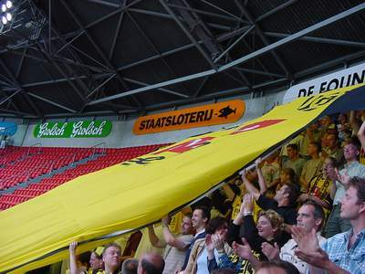
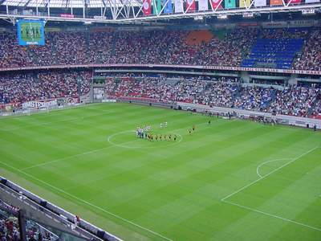
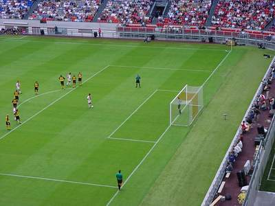
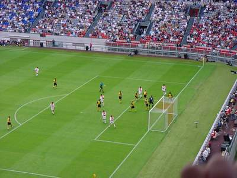

|
AAjax - Roda JC (1-1) 19 augustus 2001 |

Het Roda-shirt ging mee "on tour".

De spelers betreden het veld in een matig gevuld stadion.

In de 7e minuut veroorzaakt Kalac een penalty. Chivu's schot
wordt gekeerd door Kalac.

Er ontstaat een gevaarlijke reboundsituatie waarbij Sven
Vandenbroeck ternauwernood een doelpunt voorkomt door te
redden op de doellijn.
Nygaard kopt uit een hoekschop van Garba Lawal de 0-1 in.
Van der Vaart maakt even later weer gelijk.
©KPD